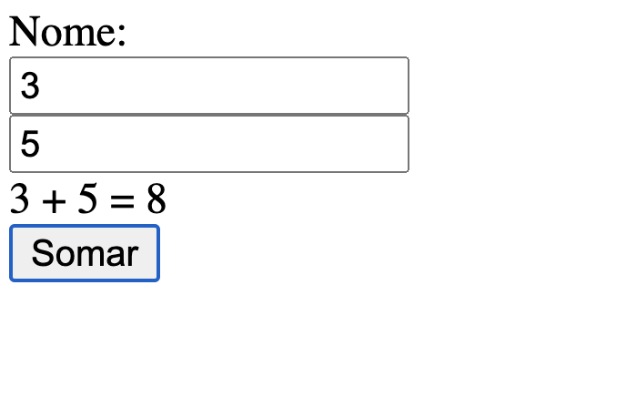

name: inverse class: center, middle, main-title # Introdução ao React.js Laboratório de Programação <img src="react.png"> --- # O que é? - Framework Javascript desenvolvido pelo Facebook <a href="https://pt-br.reactjs.org/">https://pt-br.reactjs.org/</a> - concorrente do AngularJS - Diferença em relação ao AngularJs: > Usa o modelo Flux ao invés do MVC - Tende a ser de simples aprendizado - Doc: <a href="https://react.dev/learn"> React.js Getting Started</a> --- # Flux - Arquitetura desenvolvida pelo Facebook para desenvolver aplicações no lado do cliente - Organizada em 3 elementos: - Dispatcher, Store, Views <center> <img src="hZQF2.png"> </center> --- # Flux <center> <img src="flux.png"> </center> - Dispatcher: responsável por executar ações que envolvam o servidor - Store: matém o estado da aplicação - Views: componentes resposáveis pela renderização de informação > a ideia é que o ciclo continue para manter a integridade da arquitetura como um todo - Doc: <a href="https://facebook.github.io/flux/">Flux: Application architecture for building user interfaces</a> --- # + Características - Gerencia automaticamente seu estado e atualizações de interface - Quando ocorre mudança em dados, o React automaticamente renderiza os componentes ligados - "Componentização" dos elementos de interface - legal poder reutilizar código - Componentização de estruturas JSX - legal por poder usar herança, ... - Single Page Application - JSX -> extensão de javascript: DOC: <a href="https://reactjs.org/docs/introducing-jsx.html">Introducing JSX</a> --- name: inverse class: center, middle, main-title # Montando o ambiente e criando o primeiro projeto Mãos a obra! --- #Pré-Requisitos: - <a href="https://nodejs.org/en/download/"> Node.js (precisa ser instalado) </a> - Servidor para javascript - já vem com o gerenciador de pacotes, npm - para testar instalação digite `node -v` num terminal <center> <img src="nodev.png" width="600"> </center> --- #Pré-Requisitos: - instale via node.js o `create-react-app` > npm install -g create-react-app <center> <img src="create_react.png" width="600"> </center> --- #Criando a aplicação react > `cd` na pasta que queira criar a aplicação > `create-react-app` demo-app - Atenção: aguarde ele baixar as dependências <center> <img src="create2.png" width="600"> </center> --- #Criando a aplicação react <center> <img src="tela_final.png" width="600"> </center> --- #Colocando para rodar: - Entre na pasta do projeto: `cd demo-app` - Use `npm start` - Ele disponibiliza um endereço web. Por padrão <a href="http://localhost:3000/"> http://localhost:3000/</a> <center> <img src="init.png" width="500"> </center> --- #Abrindo no VS Code - Basta abrir a pasta do projeto - Navegue pelo projeto! <center> <img src="project.png" width="600"> </center> --- name: inverse class: center, middle, main-title # Criando o primeiro componente hello world --- # Estrutura do componenete React ```JSX import React from 'react'; ... export default App; ``` --- #Podem ser funcionais ou de classe ```JSX function App() { return ( <div className="App"> <header className="App-header"> <img src={logo} className="App-logo" alt="logo" /> <p> Edit <code>src/App.js</code> and save to reload. </p> <a className="App-link" href="https://reactjs.org" target="_blank" rel="noopener noreferrer" > Learn React </a> </header> </div> ); ``` --- #Criando nosso hello - Necessita de apenas 1 nó sempre (`<div>`) ```JSX function App() { return ( <div className="App"> hello world! </div> ); ``` --- #Olhando o index.js - Olha onde o ```JSX import App from './App'; ReactDOM.render( <React.StrictMode> <App /> </React.StrictMode>, document.getElementById('root') ); ``` --- #Agora basta olhar o index.html no endereço > localhost:3000 - lembre-se que vc tem que ter efetuado `npm start` antes --- #Bacana, mas agora vamos criar um componente nosso - Podemos fazer como classe tb: ```JSX import React from 'react'; class App extends React.Component { render() { return( <div> hello world! </div> ) } } export default App; ``` --- #Diferenças - Use componenetes funcionais quando não é necessário componentes complexos - Use por classe quando é necessário adicionar mais informações --- name: inverse class: center, middle, main-title # Usando o gerenciamento de estados --- #State - O react reconhece automaticamente uma variável dentro do bloco `state` ```JSX state = { } ``` --- #State - exemplo, vamos colocar um nome, e adicioná-lo no nosso hello word ```JSX state = { nome : 'Geraldo' } ``` --- #State - por se tratar de um objeto, sempre referencie state usando `this` ```JSX render() { return( <div> hello {this.state.nome}! </div> ) } ``` --- #State - Ampliando ```JSX import React from 'react'; class App extends React.Component { state = { nome : '' } render() { return( <div> <label> Nome:</label> <input type="text" value={this.state.nome} /> </div> ) } } export default App; ``` --- #State - Podemos brincar com eventos - Obs: a renderização só acontece sobre o que foi modificado, quando modificado ```JSX import React from 'react'; class App extends React.Component { state = { nome : '' } render() { return( <div> <label> Nome:</label> <input type="text" value={this.state.nome} onChange={(e) => this.setState({nome:e.target.value})}/> O nome digitado foi: {this.state.nome} </div> ) } } export default App; ``` --- #State - Ok, podemos ir além. Vamos fazer uma soma: ```JSX state = { num1 : null, num2 : null, soma : null } ``` --- #State - Ok, podemos ir além. Vamos fazer uma soma: ```JSX render() { return( <div> <label> Nome:</label> <br /> <input type="text" value={this.state.num1} onChange={(e) => this.setState({num1 : e.target.value})}/> <br /> <input type="text" value={this.state.num2} onChange={(e) => this.setState({num2 : e.target.value})}/> <br /> </div> ) } ``` --- #State - Ok, podemos ir além. Vamos fazer uma soma: ```JSX render() { return( <div> <label> Nome:</label> <br /> <input type="text" value={this.state.num1} onChange={(e) => this.setState({num1 : e.target.value})}/> <br /> <input type="text" value={this.state.num2} onChange={(e) => this.setState({num2 : e.target.value})}/> <br /> {this.state.num1} + {this.state.num2} = {this.state.soma} <br /> <button onClick={this.somar}>Somar</button> </div> ) } ``` --- #State - Ok, podemos ir além. Vamos fazer uma soma: - Declaramos a `callback` somar como uma `air function` ```JSX somar = () => { const resultado = parseInt(this.state.num1) + parseInt(this.state.num2) this.setState({soma : resultado}) } ``` --- #Rode tudo <center>  </center>